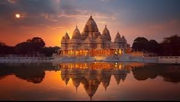

Welcome To Most precious part In Indias culture.....
Temples🛕🚩
In ancient Indian texts, a temple is a place of pilgrimage, known in India as a Tirtha. It is a sacred
site
whose
ambience and design attempts to symbolically condense the ideal tenets of the Hindu way of life.
See the Photos and Feel the presence of god...
Shri Ram-lala Mandir

The Ram Mandir, dedicated to Lord Ram, is a stunning piece of architecture that blends traditional and contemporary
design elements. The temple complex comprises the main sanctum sanctorum, various prayer halls, and intricately
carved
pillars and domes. The towering spires, intricate carvings, and the majestic sanctum sanctorum all create an
awe-inspiring ambience. As you
gaze upon the Shree Ram Mandir Ayodhya temple, you can't help but marvel at the craftsmanship that has gone into
making
it a visual symphony of devotion.
::Find ur Happy Journey::
By Aeroplane :
PUNE to LUCKNOW to AYODHYA
PUNE to MUMBAI to LUCKNOW to AYODHYA
PUNE to LUCKNOW to AYODHYA
 By Train :
By Train :
PUNE to MIRZAPUR to AYODHYA
PUNE to Satna to AYODHYA
PUNE to NEW-DELHI to AYODHYA
Prem Mandir Vrindavan

Perambalur District is centrally located in Tamil Nadu and is 267 K.M away, in southern direction, from
Chennai. The
District has an area of 1,757 Sq.Km. spread between 10.54' and 11.30' degree Northern latitude and 78.40'
and 79.30'
degree of the Eastern longitude. It is an inland district without coastal line.
Also known as the temple of divine love, Prem Mandir is dedicated to Goddess Radha and Lord Krishna, and
Lord Rama and
Goddess Sita. It was shaped and designed by Jagadguru Shri Kripaluji Maharaj in 2001, and is sprawled over
54 acre.
::Find ur Happy Journey::
By Aeroplane :
PUNE to Vrindavan
PUNE to MUMBAI to VRINDAVAN
PUNE to LUCKNOW tO VRINDAVAN
By Train :
PUNE to MATHURA to VRINDAVAN
PUNE to VRINDAVAN
Shri Arulmigu Ramanath Swammy Temple

The shrine is dedicated to Lord Shiva and is one of the twelve jyotirlinga temples in India.
Ramanathaswamy temple is
known for its imposing structure, majestic towers, intricate sculptural works and corridors, making
it an architectural
marvel. The main deity worshipped in the temple is in the form of lingam.
Rameshwaram temple is one of the most significant for the Hindus. It is a Jyotirlinga temple and one
of the Char Dhams.
It is believed that Lord Rama worshipped Lord Shiva here and this led him to victory in the historic
battle of the
Ramayana.
::Find ur Happy Journey::
By Aeroplane :
PUNE to BANGLORE to TAMIL NADU
PUNE to MUMBAI to MADHURAI to TAMILNADU
CHENNAI to RAMESHWARAM
By Train :
PUNE to MADHURAI
PUNE to BANGLORE to MADHURAI
Golden Temple

The Golden temple is famous for its full golden dome, it is one of the most sacred pilgrim
spots for Sikhs. The Mandir
is built on a 67-ft square of marble and is a two storied structure. Maharaja Ranjit Singh
had the upper half of the
building built with approximately 400 kg of gold leaf. It was commissioned, designed, and
named after Guru Arjan Sahib. The land for the temple was purchased from surrounding
villages, which was completed in 1577 after seven years of construction. It opened to the
public in 1604 as a place of
pilgrimage and worship.
::Find ur Happy Journey::
By Aeroplane :
PUNE to AMRITSAR
PUNE TO AMRITSAR
By Train :
PUNE to AMRITSAR
MUMBAI to AMRITSAR
Meenakshi Amman Temple

A striking feature of the temple is the astonishing structure know as “Ayiramkaal
Mandapam” or the Hall of Thousand
Pillars and each pillar features high, ornate, bold sculptures that look life
like.The temple is known for its “Ayiramkaal mandapam” or “Hall of a Thousand
Pillars,” which has 985 pillars, each one
unique in design. The temple has a golden lotus tank, which is believed to have been
created by Lord Shiva himself.
The temple is known for its “Ayiramkaal mandapam” or “Hall of a Thousand Pillars,”
which has 985 pillars, each one
unique in design. The temple has a golden lotus tank, which is believed to have been
created by Lord Shiva himself
::Find ur Happy Journey::
By Aeroplane :
PUNE to BANGLORE to TAMIL NADU
PUNE to MUMBAI to MADHURAI to TAMILNADU
CHENNAI to RAMESHWARAM
By Train :
PUNE to MADHURAI
PUNE to BANGLORE to MADHURAI
Click here to go homepage
Thank you
visit-again